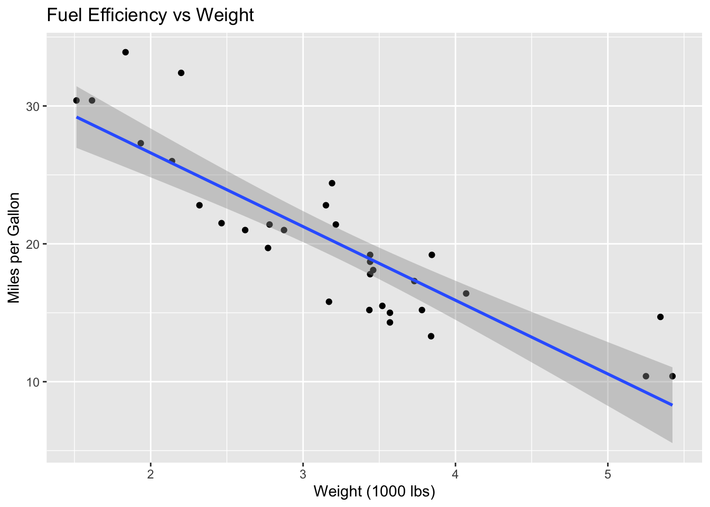

How R’s literate programming tools provide superior reproducible research capabilities compared to Python’s Jupyter notebooks
Published
June 25, 2025
1 Introduction
Reproducible research is essential in modern data science, and R’s literate programming tools—R Markdown and Quarto—provide superior capabilities compared to Python’s Jupyter notebooks. This post explores why R’s approach to reproducible research is more powerful and flexible.
2 Literate Programming Philosophy
2.1 R’s Integrated Approach
R Markdown and Quarto embody the literate programming philosophy by seamlessly integrating:
Code execution with narrative text
Dynamic output generation
Multiple output formats from a single source
Version control integration
Citation management
2.2 Python’s Fragmented Ecosystem
Jupyter notebooks, while popular, have limitations:
Limited output formats (primarily HTML)
Version control challenges with JSON format
Less integration with publishing workflows
Manual citation management
3 R Markdown: The Gold Standard
3.1 Simple R Markdown Example
Code
# Load librarieslibrary(dplyr)library(ggplot2)# Load and examine datadata(mtcars)head(mtcars)
ggplot(mtcars, aes(x = wt, y = mpg)) +geom_point() +geom_smooth(method ="lm") +labs(title ="Fuel Efficiency vs Weight",x ="Weight (1000 lbs)",y ="Miles per Gallon" )

Figure 1: Scatter plot with regression line
As shown in Figure 1, there is a strong negative relationship between weight and fuel efficiency.
5 Jupyter’s Limitations
5.1 Version Control Challenges
# Jupyter notebook cellimport pandas as pdimport matplotlib.pyplot as plt# This creates a JSON file that's hard to diffdata = pd.read_csv('mtcars.csv')data.head()
Jupyter notebooks store metadata in JSON format, making them difficult to version control effectively.
5.2 Limited Output Formats
# Jupyter primarily outputs HTML# Converting to PDF or Word requires additional tools# No built-in citation management
# Example of parameterized analysis# In a real parameterized report, params would be defined in YAML headerdataset_name <-"mtcars"response_var <-"mpg"predictor_vars <-c("wt", "cyl")# Use parameters in analysisdata <-get(dataset_name)response <- data[[response_var]]predictors <- data[predictor_vars]# Dynamic analysisformula_str <-paste(response_var, "~", paste(predictor_vars, collapse ="+"))model <-lm(as.formula(formula_str), data = data)# Display resultssummary(model)
Call:
lm(formula = as.formula(formula_str), data = data)
Residuals:
Min 1Q Median 3Q Max
-4.2893 -1.5512 -0.4684 1.5743 6.1004
Coefficients:
Estimate Std. Error t value Pr(>|t|)
(Intercept) 39.6863 1.7150 23.141 < 2e-16 ***
wt -3.1910 0.7569 -4.216 0.000222 ***
cyl -1.5078 0.4147 -3.636 0.001064 **
---
Signif. codes: 0 '***' 0.001 '**' 0.01 '*' 0.05 '.' 0.1 ' ' 1
Residual standard error: 2.568 on 29 degrees of freedom
Multiple R-squared: 0.8302, Adjusted R-squared: 0.8185
F-statistic: 70.91 on 2 and 29 DF, p-value: 6.809e-12
6.2 Interactive Documents
Code
library(plotly)library(ggplot2)# Create interactive plotp <-ggplot(mtcars, aes(x = wt, y = mpg, color =factor(cyl))) +geom_point() +theme_minimal()ggplotly(p)
7 Publishing Workflows
7.1 R’s Publishing Ecosystem
7.2 Academic Publishing
---title:"Statistical Analysis of Automotive Data"author:"Dr. Jane Smith"date:"2025-07-11"format:pdf:documentclass: articlegeometry: margin=1infontsize: 11ptlinestretch:1.5bibliography: references.bibcsl: apa.csl---
8 Code Chunk Options
8.1 R’s Flexible Code Control
Code
# This code will be executed, cached, and displayed# with specific figure dimensions
8.2 Python’s Limited Options
# Jupyter has fewer code cell options# No built-in caching# Limited figure control# No easy way to suppress warnings/messages
9 Collaboration and Sharing
9.1 R’s Collaborative Features
Code
# R Markdown integrates with:# - Git for version control# - GitHub for collaboration# - RStudio Connect for sharing# - Bookdown for multi-chapter documents
While Jupyter notebooks are popular for exploration, R Markdown and Quarto provide superior capabilities for reproducible research and professional publishing.
---title: "Reproducible Research: R Markdown vs Jupyter"description: "How R's literate programming tools provide superior reproducible research capabilities compared to Python's Jupyter notebooks"date: 2025-06-25categories: [reproducible-research, rmarkdown, quarto]---## IntroductionReproducible research is essential in modern data science, and R's literate programming tools—R Markdown and Quarto—provide superior capabilities compared to Python's Jupyter notebooks. This post explores why R's approach to reproducible research is more powerful and flexible.## Literate Programming Philosophy### R's Integrated ApproachR Markdown and Quarto embody the literate programming philosophy by seamlessly integrating:- **Code execution** with narrative text- **Dynamic output** generation- **Multiple output formats** from a single source- **Version control** integration- **Citation management**### Python's Fragmented EcosystemJupyter notebooks, while popular, have limitations:- **Limited output formats** (primarily HTML)- **Version control challenges** with JSON format- **Less integration** with publishing workflows- **Manual citation management**## R Markdown: The Gold Standard### Simple R Markdown Example```{r}#| echo: true#| warning: false#| message: false# Load librarieslibrary(dplyr)library(ggplot2)# Load and examine datadata(mtcars)head(mtcars)```**Analysis Results:**The dataset contains information about 32 automobiles, including fuel efficiency (mpg), weight (wt), and number of cylinders (cyl).```{r}#| echo: true#| fig-cap: "Fuel efficiency distribution by cylinder count"# Create visualizationggplot(mtcars, aes(x =factor(cyl), y = mpg)) +geom_boxplot(fill ="lightblue", alpha =0.7) +labs(title ="Fuel Efficiency by Cylinder Count",x ="Number of Cylinders",y ="Miles per Gallon" ) +theme_minimal()```### Statistical Analysis```{r}#| echo: true#| results: asis# Perform statistical testmodel <-lm(mpg ~ wt + cyl, data = mtcars)summary_model <-summary(model)# Display results in formatted tablelibrary(knitr)kable(summary_model$coefficients, digits =3,caption ="Linear Regression Results")```## Quarto: The Next Generation### Advanced Quarto Features```yaml---title:"Advanced Statistical Analysis"format:html:toc:truecode-fold:truecode-tools:truepdf:documentclass: articlegeometry: margin=1indocx:reference-doc: template.docxexecute:echo:trueeval:truewarning:falseerror:falsebibliography: references.bib---```### Cross-References and Citations```{r}#| label: fig-scatter#| fig-cap: "Scatter plot with regression line"ggplot(mtcars, aes(x = wt, y = mpg)) +geom_point() +geom_smooth(method ="lm") +labs(title ="Fuel Efficiency vs Weight",x ="Weight (1000 lbs)",y ="Miles per Gallon" )```As shown in @fig-scatter, there is a strong negative relationship between weight and fuel efficiency.## Jupyter's Limitations### Version Control Challenges```python# Jupyter notebook cellimport pandas as pdimport matplotlib.pyplot as plt# This creates a JSON file that's hard to diffdata = pd.read_csv('mtcars.csv')data.head()```Jupyter notebooks store metadata in JSON format, making them difficult to version control effectively.### Limited Output Formats```python# Jupyter primarily outputs HTML# Converting to PDF or Word requires additional tools# No built-in citation management```## Advanced R Markdown Features### Parameterized Reports```yaml---title:"Analysis Report"params:dataset:"mtcars"response_var:"mpg"predictor_vars:["wt","cyl"]---``````{r}#| echo: true# Example of parameterized analysis# In a real parameterized report, params would be defined in YAML headerdataset_name <-"mtcars"response_var <-"mpg"predictor_vars <-c("wt", "cyl")# Use parameters in analysisdata <-get(dataset_name)response <- data[[response_var]]predictors <- data[predictor_vars]# Dynamic analysisformula_str <-paste(response_var, "~", paste(predictor_vars, collapse ="+"))model <-lm(as.formula(formula_str), data = data)# Display resultssummary(model)```### Interactive Documents```{r}#| echo: truelibrary(plotly)library(ggplot2)# Create interactive plotp <-ggplot(mtcars, aes(x = wt, y = mpg, color =factor(cyl))) +geom_point() +theme_minimal()ggplotly(p)```## Publishing Workflows### R's Publishing Ecosystem```{r}#| echo: false# R Markdown supports multiple publishing platforms# - RStudio Connect# - GitHub Pages# - Netlify# - Academic journals# - Bookdown for books```### Academic Publishing```yaml---title:"Statistical Analysis of Automotive Data"author:"Dr. Jane Smith"date:"`r Sys.Date()`"format:pdf:documentclass: articlegeometry: margin=1infontsize: 11ptlinestretch:1.5bibliography: references.bibcsl: apa.csl---```## Code Chunk Options### R's Flexible Code Control```{r}#| echo: true#| eval: true#| warning: false#| message: false#| fig.width: 8#| fig.height: 6#| fig.align: "center"#| cache: true# This code will be executed, cached, and displayed# with specific figure dimensions```### Python's Limited Options```python# Jupyter has fewer code cell options# No built-in caching# Limited figure control# No easy way to suppress warnings/messages```## Collaboration and Sharing### R's Collaborative Features```{r}#| echo: true# R Markdown integrates with:# - Git for version control# - GitHub for collaboration# - RStudio Connect for sharing# - Bookdown for multi-chapter documents```### Team Workflows```yaml---title:"Team Analysis Report"author:-name:"Data Science Team"affiliation:"Company Inc."format:html:toc:truetoc-depth:3number-sections:truecode-fold:trueexecute:echo:trueeval:truewarning:falseerror:false---```## Performance Comparison| Feature | R Markdown/Quarto | Jupyter Notebooks ||---------|------------------|-------------------|| Output Formats | HTML, PDF, Word, PowerPoint | Primarily HTML || Version Control | Excellent (text-based) | Poor (JSON-based) || Citations | Built-in support | Manual management || Cross-references | Native support | Limited || Parameters | Built-in | Requires nbparameterise || Publishing | Multiple platforms | Limited options || Academic Writing | Excellent | Basic || Code Options | Extensive | Limited |## ConclusionR's reproducible research tools provide:- **Multiple output formats** from a single source- **Excellent version control** integration- **Built-in citation management**- **Academic publishing** capabilities- **Parameterized reports** for automation- **Interactive elements** with Shiny integrationWhile Jupyter notebooks are popular for exploration, R Markdown and Quarto provide superior capabilities for reproducible research and professional publishing.---*Next: [Academic Research: R's Dominance in Statistics](/blog/academic-research-r-vs-python.qmd)*